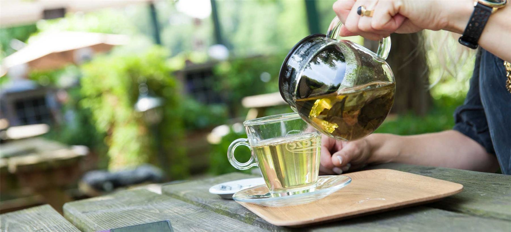
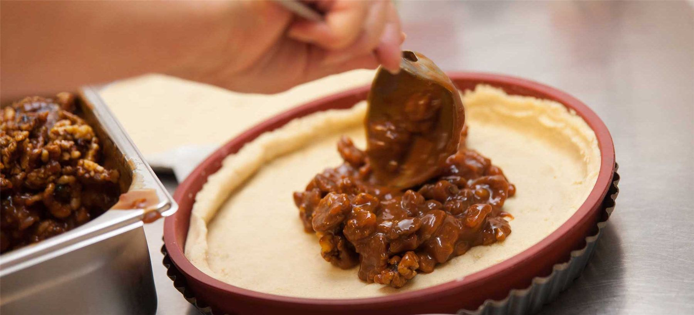
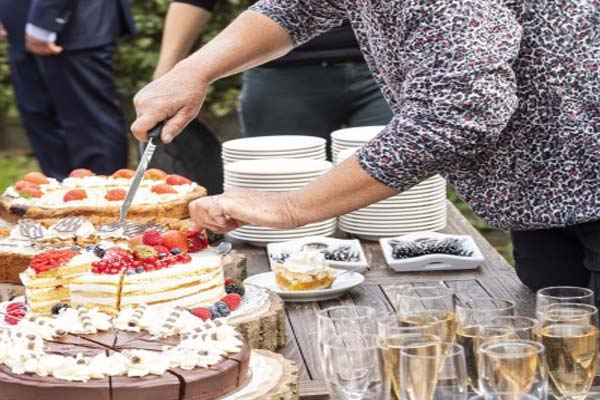
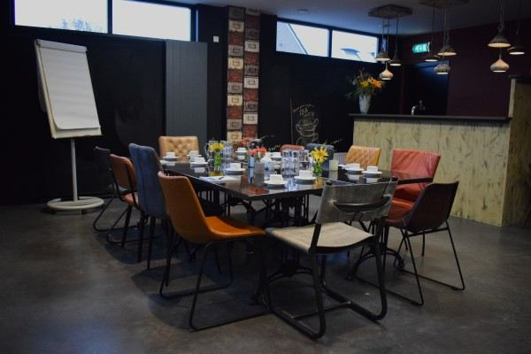
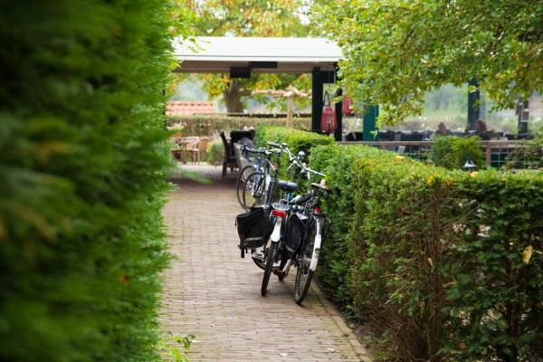
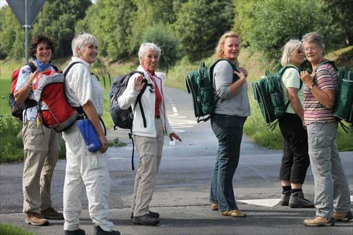
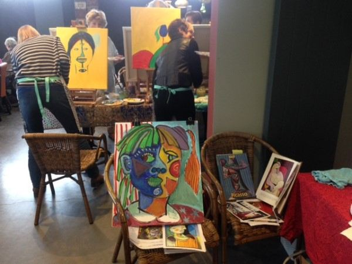
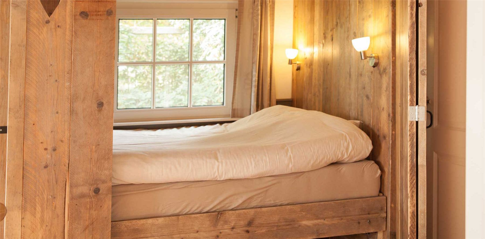
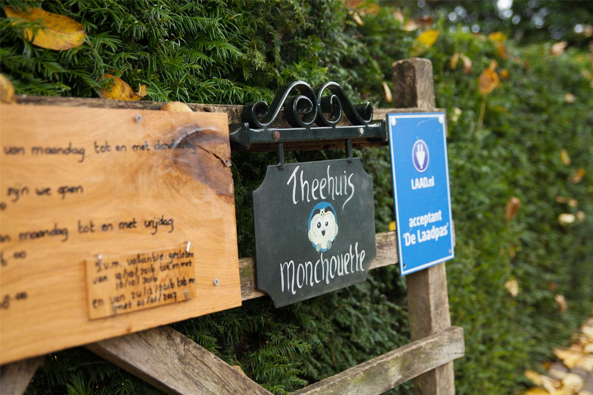

De steenuil
Theehuis Mon-Chouette heeft haar naam te danken aan de vele steenuilen die zich rondom het theehuis bevinden. Chouette is de Franse benaming voor steenuil.
Leusden · aan het Valleikanaal
Geniet midden in de natuur van een goede kop thee
High tea-en, genieten van de natuur, actief recreëren, cultuur opsnuiven, rust vinden, feest vieren, logeren: je kan het allemaal bij Theehuis Mon-Chouette!
Mon-Chouette is gevestigd in een verbouwde boerderij midden in het prachtige groene achterland van Leusden. Centraal in Nederland, met de stad Amersfoort om de hoek. Het uitzicht op het Valleikanaal maakt de locatie nog mooier, en het grenzen aan de Grebbelinie maakt de plek historisch en toeristisch.
In de keuken wordt volop gebruik gemaakt van lokale, regionale en fairtrade producten. Wat dacht je van een eitje van de buurman? Of ons fairtrade 'huis-ijs'? Geniet van huisgemaakt gebak, goede thee, lunch of een snelle hap op deze rustige groene plek.
We zijn 7 dagen in de week open. Ontdek de plek, de omgeving, de natuur en de rust. Ontdek Mon-Chouette!
Groet, Kellygastvrouw én kok

Theehuis Mon-Chouette heeft haar naam te danken aan de vele steenuilen die zich rondom het theehuis bevinden. Chouette is de Franse benaming voor steenuil.

Heb jij die al eens geproefd? We hebben gasten die er speciaal voor komen. Begin de dag met goede thee en huisgemaakte rabarbertaart met aardbeien en monchou.
Zelf georganiseerd of in samenwerking met de ANWB of het Regionaal Bureau voor Toerisme. Arrangementen zijn een combi van recreatie en eten & drinken.
Fairtrade restaurant van Leusden · Leusden Wandelgemeente 2017
Proef en ervaar de aandacht voor de omgeving én het product. Kom na het recreëren terug voor de lunch, en sluit de middag af met een makkelijke, stevige hap. Naast gewoon binnenlopen biedt Kelly allerlei arrangementen op reservering aan.
27,50 p.p.
Kom high tea-en met vriendinnen, je zus of moeder: gewoon of als cadeau! Totaal 3 gangen en onbeperkt thee drinken.
Op reservering. Bel 033 - 433 74 09 of mail info@monchouette.nl.
17,50 p.p.
Combinatie van zoete en hartige lekkernijen, met 1 koffie of thee naar keuze.
Lunch van 12.00 tot 16.00 uur
29,50 p.p.
Vier bieren, elk met een bijpassend hapje.
Weizen: troebel en fruitig, met kruidig karakter.
Kipburger met citrusmayonaise en komkommer
Blond bier met honing en sinaasappelschillen, friszoete smaak.
Frisse salade met falafel en mangochutney
Amber bier, hoppig, met een fris bittere afdronk.
Scones met clotted cream en sinaasappelmarmelade
Tripel met honing en koriander, zoete afdronk.
Dat is nog even een verrassing
29,50 p.p.
Vier wijnen, elk met een bijpassend hapje.
Fris zure biologische wijn met tonen van citrus.
Visburger met citroenmayonaise en komkommer
Volle, houtgelagerde wijn met een klein bittertje en tonen van tropisch fruit.
Frisse salade met falafel en mangochutney
Droge, subtiele rosé met tonen van rood fruit.
Scones, clotted cream en huisgemaakte aardbeienjam
Zachte rode wijn met tonen van donker fruit en chocolade.
Dat is nog even een verrassing
Koffietafel met een groep, een buffet voor familie of collega's, of een diner op maat: alles op reservering.
25,00 p.p.
Alleen op reservering, vanaf 10 personen
Uitgebreide lunch met een buffetje op tafel:
Desgewenst tegen meerprijs uit te breiden met roerei, bacon of diverse salades.
Op aanvraag, vanaf 12 personen
Diner kan gereserveerd worden vanaf 12 personen, met een op maat gemaakt menu. Er is geen vaste dinerkaart.
Vraag een diner aan
Vanaf 15 personen · 33,50 p.p. · nagerechten 9,50 p.p.
Nagerechten, 9,50 p.p.: tiramisu · limoncello-crème in chocoladebakje · vers fruit
Uitbreiding nagerechten, 9,50 p.p.: slagroomsoesjes met chocoladesaus · fruitbavarois · ijstaart
Uitbreiding nagerechten, 9,50 p.p.: omelet sibérienne · kleine crèmes brûlées · diverse Franse kazen met huisgemaakte chutneys
Met haar oude boerderij, grote tuin en landelijke ligging met veel groen en water is Mon-Chouette een heel leuke en geschikte locatie voor allerlei gelegenheden. Huur een binnenruimte af, ons terras of onze tuin voor een bruiloft, kraamfeest of familiefeest.
Zoek je een rustige plek voor een zakelijke meeting, een condoleance, of organiseer je een uitje? Zet ons voor je aan het werk bij een familie-, vrienden- of werkuitje. De mooie boerderij en de recreatie- en workshopmogelijkheden in en rond het pand zijn ingrediënten voor een leuk arrangement. We werken samen met ondernemers in de buurt, dus geef je wensen door.
Meer informatie via het theehuis: 033 - 433 74 09 of info@monchouette.nl.
Huur (een deel van) het theehuis, de tuin of het terras.
Ben jij je ervan bewust wat een locatie kan doen voor jouw meeting, workshop, feest of condoleance? Een locatie kan inspireren, sfeer geven, motiveren en je een bepaald gevoel geven. Daarom hebben wij een nieuwe ruimte erbij gebouwd om te huren. De plek vroeg erom: een rustige, landelijke locatie. Warm, vriendelijk en een beetje stoer.
Huur je De Paardenstal, dan maak je ook gebruik van catering. En als het gaat om eten, dan houden wij van de vrijheid om het assortiment aan te passen aan het seizoen, onze interesse en het lokale aanbod.


De verbouwde boerderij ligt aan het Valleikanaal en grenst aan de Grebbelinie, in het hart van mooie fiets- en wandelroutes. Met mogelijkheden voor activiteiten op het water, en creatieve workshops op het eigen terrein.

Ga (met picknickrugzak) mee met een enthousiaste gids en wandel over de Asschatterkeerkade. Meer over het landschap op Leesbaar Landschap Leusden.
Mon-Chouette is gekoppeld aan routes en fietsknooppunt 86 van Fietsnetwerk.nl.
Fietsroute Leusden en AchterveldFietsroute rond Achterveld en De Glind

Met Linda Art (linda-art.nl): een dagdeel schilderen met acrylverf, voor een groep van minimaal 6 en maximaal 12 personen. Op een schildersdoek van 50 x 60 cm, staand of zittend.
Ontvangst om 10.00 uur met koffie of thee en wat lekkers, 2,5 uur workshop met tussendoor nog een kop koffie of thee, na afloop soep met brood.
Ontvangst om 13.00 uur met koffie of thee en wat lekkers, 2,5 uur workshop, na afloop een bittergarnituur met een drankje.
Thema's: dieren (koeien, schapen, zwanen, kippen), een portret à la Picasso, een landschap in de stijl van Van Gogh, of Meisje met de parel. Een eigen thema is bespreekbaar, net als een andere invulling van het eten (uitgebreide lunch of diner).
Boek een workshopJij tekent je vriendin, halverwege wissel je. Ook leuk voor een vrijgezellenfeest: schilder een karaktertrek van de bruid, terwijl de bruid een schilderij maakt voor haar toekomstige partner. Onder leiding van kunstenares Linda de Wit van Linda Art.
Te combineren met een high tea of borrel voor een compleet arrangement: binnen, of bij mooi weer in de Geitenwei.

Overnacht en ontwaak op een unieke, groene plek. Vraag het theehuis naar de mogelijkheden.Diner alleen op reservering. Let op: de keuken sluit een uur eerder. Andere tijden op aanvraag (vanaf 10 personen).
Theehuis Mon-Chouette